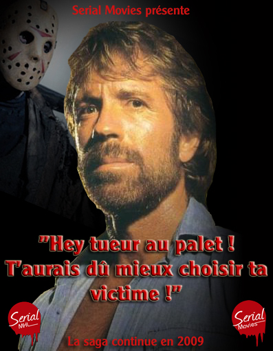

Maurice Schuck : histoire d'un retour
Extraits du long entretien qu'a accordé Zigger Blank au magazine "Serial Cinemania"

Zigger Blank
Serial Cinemania : "Stab 4 est-il LE film du changement pour Maurice Schuck ?"
Zigger Blank : "Vous savez, Maurice Schuck est un homme d'instinct. (rires) Il a eu de l'instinct en lowkickant son ancien impresario Jeb Riffle. Il a eu de l'instinct en signant un nouveau contrat avec Serial Movies. Il a eu de l'instinct en acceptant la proposition de Bob Serial de me choisir comme nouvel impresario. Et surtout, il a eu de l'instinct d'accepter un scénario aussi extraordinaire que celui de Stab 4."
SC :
"Justement, on murmure énormément de choses sur le scénario de
Stab4. Surtout depuis que circule la première affiche teaser où l'on
voit le regard d'acier de Maurice Schuck mettre en garde un mystérieux
tueur au palet. Chuck Norris va-t-il affronter Georgie Tobby ?"
ZB : "Oh la la ! Ce n'est pas moi qui vait spoiler le film ! (rires) Mais effectivement, ce n'est plus un secret : le grand méchant de Stab 4 sera bien le plus grand Serial Killer de tous les temps : Georgie Tobby !! Mais il ne sera pas le seul ennemi que Maurice Schuck devra affronter : Stab4 ne manquera pas de vous surprendre ! (rires)"

SC : "Etre l'impresario de l'immense Maurice Schuck, n'est-ce pas trop de pression pour un seul homme ?"ZB : "Vous savez, Maurice Schuck est un grand professionnel (rires). Travailler pour lui est extrememement stimulant. Je me dois d'être à la hauteur chaque jour (rires). J'essaie de rester pro et de donner le meilleur de moi même. Ce n'est pas tous les jours faciles (rires), mais je crois que je ne m'en sors pas si mal."
SC : "Serial Movies mise tout sur Stab 4, vous en avez conscience ?"
ZB : "Oui, et c'est ce qui me motive. (rires) Mais attendez de voir le film et vos doutes, s'ils existent seront dissipés. Avec Stab4, vous allez retrouver le Maurice Schuck des grands jours ! Le Maurice Schuck de Coups de boules à Bogota et de Torgnoles à Saïgon ! (rires)"
-1-
Pseudo : Actarus
Note : 5/5
Commentaire : "Encore un chef d'oeuvre de Schuck Maurice en perspective. Quel acteur !"
Pseudo : Jenny
Note : 5/5
Commentaire : "Ouais, il a l'air trop cool ce film".
-3-
Pseudo : Miki
Note : 5/5
Commentaire : "Stab 3 manquait cruellement d'action (et de zombies). Avec Schuck, on ne pourra pas être déçu. Le tueur au palet a du soucis à se faire"
-4-
Pseudo : Critiqueman
Note : 1/5
Commentaire : "On préférait l'ancienne coupe de cheveux de Schuck"